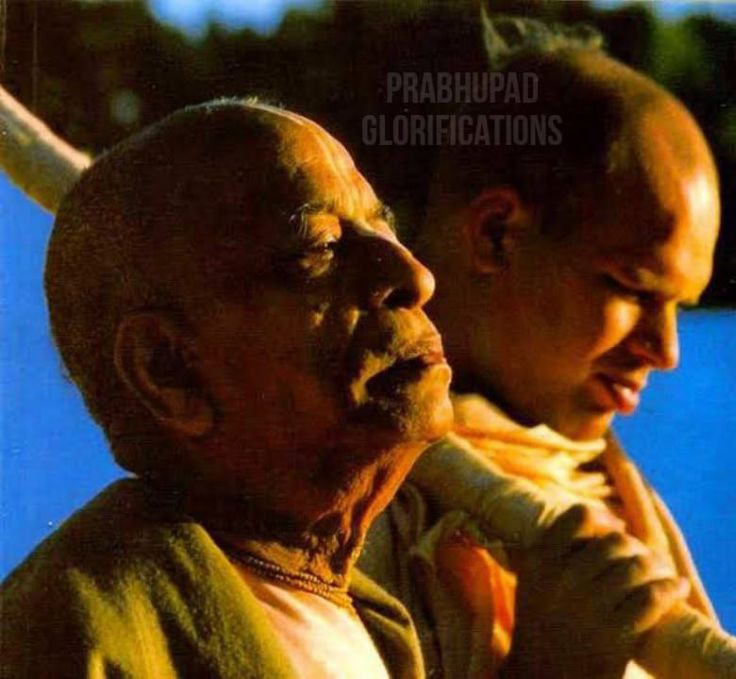

Never have I seen anyone do sādhana like he did.
Posted on : 25th October, 2024

At the beginning of the interview, upon being asked if he knew Srila Prabhupāda, Babāji Mahārāja began to cry.
"Never have I seen anyone do sādhana like he did. I have Lived all my life in Vraja and I have never seen anyone like him. Prabhupāda did many arduous things, he worked very hard there at the Rādhã Dāmodara Temple. At that time it was austere, undeveloped, and very muddy and dirty with no facilities." Weeping, Babāji Mahārāja quoted a śloka from Caitanya caritämrta, from Sanātana Goswāmi, about the importance of sādhana. Then, quoting Svarūpa Dāmodara and Rāmānanda raya, he said, "Without sādhana one can never attain krşna- prema. Also, prthivite ache yata nagarādi-grãma...! Many years later, when I heard that it was actually he who had been chosen by Caitanya Mahāprabhu to spread the Hare Krsna mahã-mantra around the world. I was not surprised."
~ Sripād Hridayānanda Bābāji Mahārāj from Rādhā Kunda a Poojāri for 78 Yrs in interview with Mulaprkriti devi dāsi.